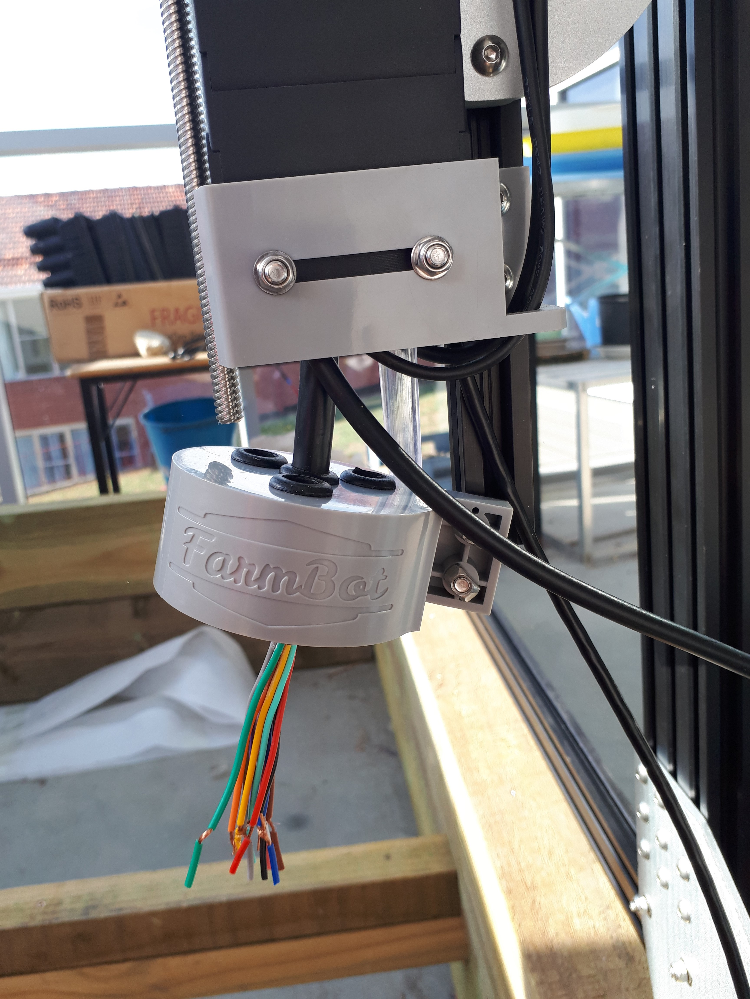

FarmBot

7th March
After a long wait, FarmBot finally arrived!
15th March
Began unboxing FarmBot, checking everything was there and getting a feel for how everything would work.

19th March
Looked at instructions and figured out exactly what we were going to do and how we were going to do it. We also measured the box and marked where we need to drill holes to attach the support plates.

21st March
With some anxiety, we made made our first irreversible move building FarmBot. We screwed in the support plates - luckily, nothing went wrong! - and attached the t-nuts to these.

22nd March
Attached the metal tracks to the support plates.

26th March
Attached the cable carriers to the tracks and began building the gantry - built and attached wheels to the support plates which will slide along the tracks, allowing the gantry to move.
29th March
Built the sides of the gantry, which was somewhat difficult and awkward because of the number and angles of the t-nuts, then attached them.
5th April
Built and attached the top bar of the gantry.
6th April
Added the belts and completed the gantry.
9th April
Realised how the eccentric spacers work, allowing us to fix the wheels so the gantry and top bar slide smoothly. This involved partially removing the belts so we could take the gantry off, then reattaching them. Apart from a little struggle getting one of the belts back on, no problems were encountered.
30th April
Attached the most of the z-axis part and began sorting out the cables and cable carrier that go on it.
2nd May
Attached the cables and cable carrier on the z-axis part.
3rd May
Attached the cables and cable carrier to the top of the gantry and began sorting out the cables and cable carrier that go along the side of the garden bed.
7th May
Built the universal tool mount and cover.

8th May
Began wiring up the universal tool mount cover.
7th - 17th May
Finished wiring up the UTM. We struggled a lot attach the individual wires as it was so difficult and fiddly, so we only attached the mandatory four (out of twelve).
21st - 28th May
Built, attached and wired up the electronics box.
21st - 30th May
Built, attached and wired up the electronics box.
1st - 6th June
Downloaded software and sorted out the Raspberry Pi. Broke magnets on the 5th.
15th June
Discovered that we had been sent one wrong cable, which explained why we couldn't get one to reach the electronics box.
6th August
The new cable finally arrived, so we replaced the old, incorrect one. Because we had to avoid all the other cables coming out of place, we found the best way to do this was to remove most of the cable carrier tabs, then tape the new cable to the end of the old one and pull it through. This whole process took a lot of effort, and resulted in many hurt fingers.